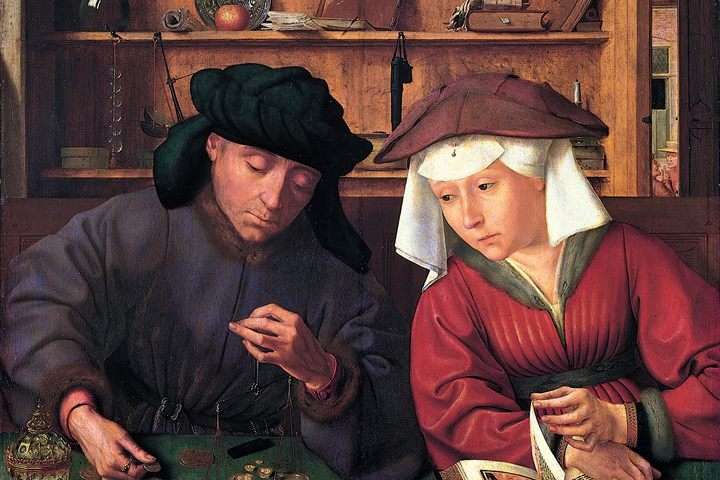

CONVERSATION
Money, Gravity and the Posit
Where the project began: money against gravity, Popper and the humanities, the anatomy of an abstract theory, four research reports, Psillos, and a machine that predicts without posits — twenty-three questions and their answers
Read
187 KB